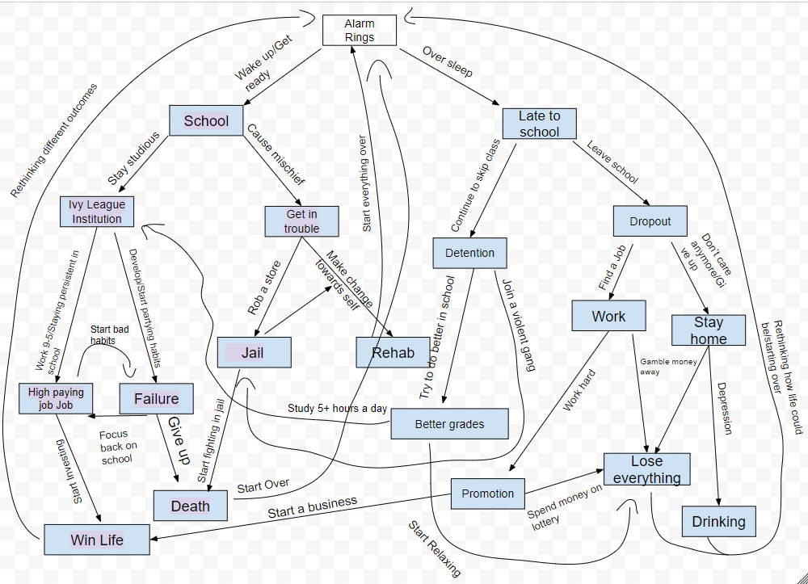

CYOA Project
Context
For this CYOA project, I collaborated with my partner, Johnny, to create a file path in which users can choose their own adventures by selecting their desired choices at certain levels. This project mainly involved using markdown on GitHub.
Process
To begin with the project, my partner and I first designed a plan. Given our topic, "The Game Of Life", my partner and I figured it was best to keep most of the file paths and selection choices similar to the reality of the world. After making the decision, we began with making a visual diagram, which showed the overview of connections between the choices and levels. The diagram took some time to complete, but once it was finished, we immediately had a clear path in our minds and started to code.
In the coding section of the project, my partner and I first made a repository and then created new files within it. Afterward, we wrote and adjusted the text and photos and added relative links throughout each text file. During this process, my partner and I kept communications clear. The flow of communication allowed us to minimize mistakes and work more efficiently.
Challenge and Solution
While reaching a minimum viable product for the project, my partner and I wanted to go even further. We tried to incorporate images with our current progress, but a challenge occurred - Johnny and I both didn't know how to apply the images that were included in separate folders in Markdown.
Our first solution was to use the element, but we shortly noticed that it only supported the HTML language. The next solution we generated was to use the `` format, as indicated in past notes that we recorded. The result didn't work either. The last solution we came up with was to display the image in the ` syntax. As we used this, the image was shown in a way that we desired. We repeated the process in every path file we created.
Self-Reflection
Click Here For Better View Of Diagram
